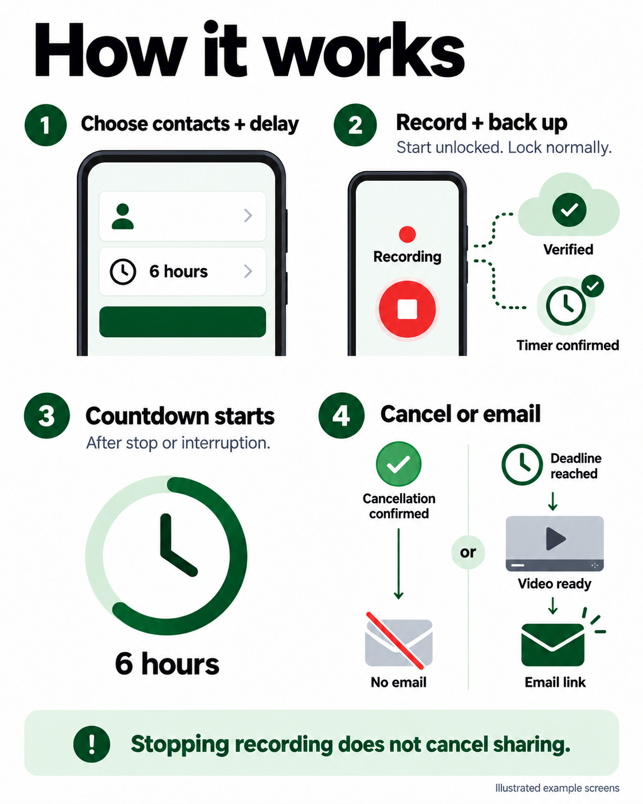

Economy
480p25–30 MB
Smaller uploads.
Android · Private cloud backup · Timed email sharing
Record abuse and repression. Back up video and audio to private cloud storage, and set a timer to share with loved ones unless you cancel. Uploaded clips remain available if your phone is taken.
Android 11 or later. A connection code is needed for cloud access.
Record through screen lockStart with the app open and the phone unlocked.
Upload as you recordShort clips reach the cloud before recording ends. After video, selected audio backs up; full audio stays local.
Share after a delayCancel before the server deadline to prevent automatic email.
01 / How it works
You choose the contacts and release delay in the app. The server manages the confirmed timer.

Cancellation confirmedNo automatic email for that recording.
Deadline reachedThe server attempts email delivery after the combined video is verified.
Release checks run every 20 minutes. Email can follow the deadline by almost 20 minutes, plus processing and provider time.
02 / Protection report
Video, audio and location in one private report.
Watch video and listen to available audio.
Gaps stay visible. Missing audio is not silence.
Download one evidence ZIP with media, location and checksums.
Preview only: updated reports are not live yet. All example media is generated.
03 / Get started
Download here. Connect and choose your recipients inside the app.
For Android 11 or later · Invitation needed to connect
One app, different file sizes. Use the highlighted download.
On this website · No personal details needed
Ask the app owner for the current APK.
Universal is ready to download. Choosing your model is optional and may find a smaller file.
Open the .apk file in Downloads, tap Install, then open Evidence Recorder.
On your Android phone
Updating? Install over the existing app. Keep it installed and keep its data while uploads are pending.
If asked, allow installation from your browser. Keep Android security checks enabled. You can turn the installation permission off afterward.
If Android rejects the update, keep the existing app and contact the owner.
Follow the app’s setup screens. This is where your invitation and recipient details are needed.
Inside Evidence Recorder
No invitation yet? Ask the app owner. You can download now; connecting needs an invitation.
04 / Mobile data
Rear camera and microphone. Actual uploads vary.
25–30 MB
Smaller uploads.
40–49 MB
More image detail.
Ranges cover the configured HEVC/H.264 bitrates plus 48 kbps microphone audio. Two-camera recording, retries and video downloads use more data. Actual size depends on the phone and recording.
05 / Before recording
Run the app’s camera, microphone and upload checks.
Cloud backup and the sharing timer each need confirmation.
Low battery or storage can stop recording.
Reconnect to upload. Do not uninstall or clear app data.
06 / Questions
Yes, during normal screen lock. Start recording while the phone is unlocked and the app is visible. Video stops at your selected limit of 10–30 minutes. The phone then continues audio capture through silence until the battery reaches 10%, or an earlier stop condition. After the video phase, only speech-selected or uncertain audio is uploaded; complete audio stays on the phone. The 10% reserve does not guarantee that pending uploads finish. You can stop earlier after unlocking.
The Galaxy A07 records the rear camera and microphone. It does not alternate cameras.
On other phones, the app checks simultaneous front and rear recording after camera and microphone permissions are given. If it cannot confirm support, it uses the rear camera only. S23 FE support is not yet verified.
The phone can save recordings locally. Pending uploads retry when internet access returns, subject to Android restrictions. Full audio and files that never upload stay local; the server cannot see them.
There is no remote timer until the server confirms it. The video cutoff starts the acknowledged sharing countdown while audio may continue. If a timer is already confirmed, a lost connection can cause the server to detect an interruption.
Your private invitation page can check its status without using it. The app checks again when you confirm the connection. Ask the app owner for a new invitation if it has expired or was used by another phone.
Each invitation connects one phone and is valid for 48 hours after creation. Its expiry does not expire a saved phone connection.
Recording stops. Previously finalized clips remain available for upload. After one-time unlocked storage preparation, the app can resume pending uploads after a restart before the first unlock. Android scheduling, network and battery conditions can delay uploads. Cameras and microphone never restart automatically.
After Android force-stop, open the app again to resume upload scheduling. The unfinished last clip can be lost. There is no absolute capture guarantee.
Recordings upload to private AWS storage. Automatic sharing sends trusted contacts expiring access links. Anyone who receives a forwarded link can use it until access expires. The app shows the effective recipients, including the default recipient, before the demo and while you choose recipients.
New automatic-email recordings include an administrator copy after the app discloses it before recording. Historical recordings keep their frozen audience.
This public webpage contains installation guidance and a fictional sample only. It does not access your recordings, connection code or account credentials, and it lists no real contact details.
Recipient access links expire. New canceled sessions default to seven-day deletion unless kept. Released footage becomes eligible for archival after 30 days, and recipient link access ends when archival begins. Historical sessions keep their frozen retention policy.
An already active recording can continue if someone takes the phone. Start from the visible, unlocked app; normal screen lock keeps it running. The app cannot detect phone confiscation or activate the microphone remotely. Power loss, force-stop or another interruption can stop capture; the server can only report what it observed.
Your next step